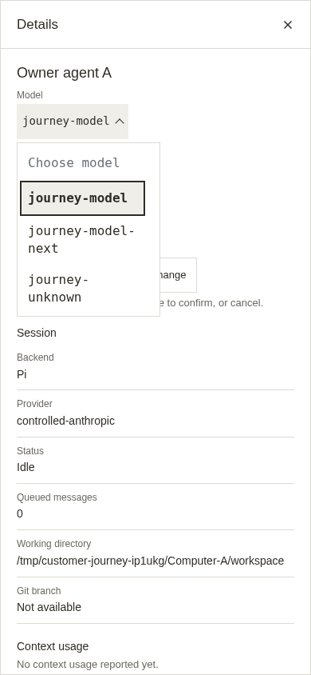
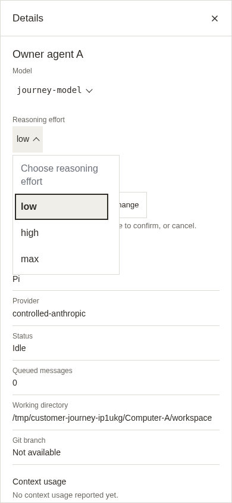
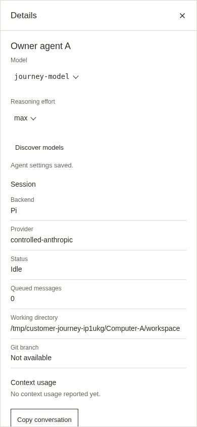
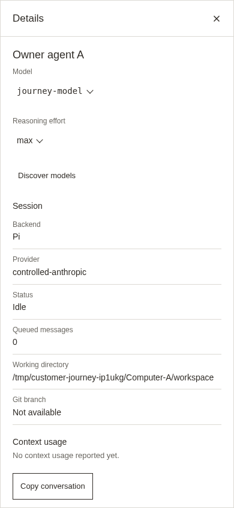
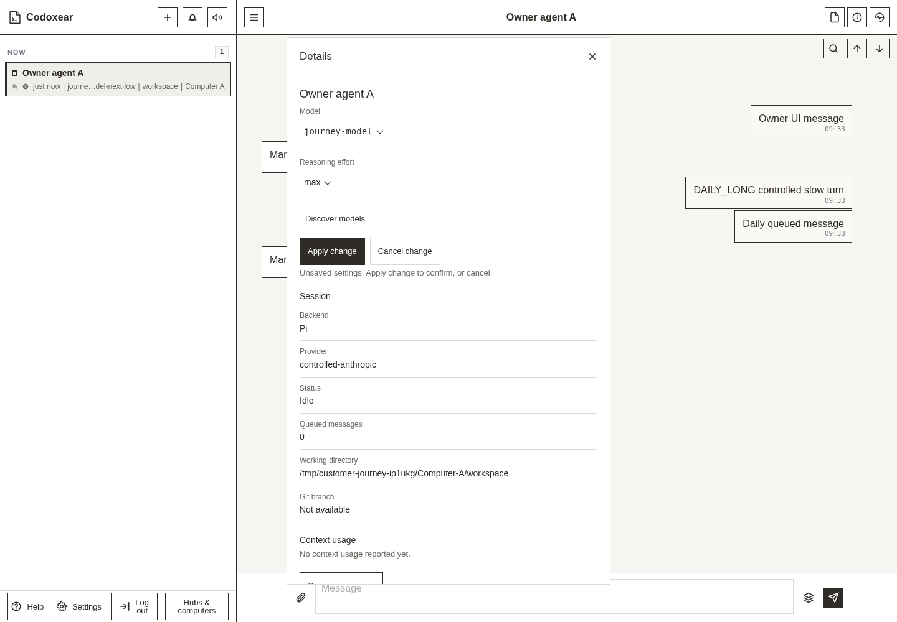
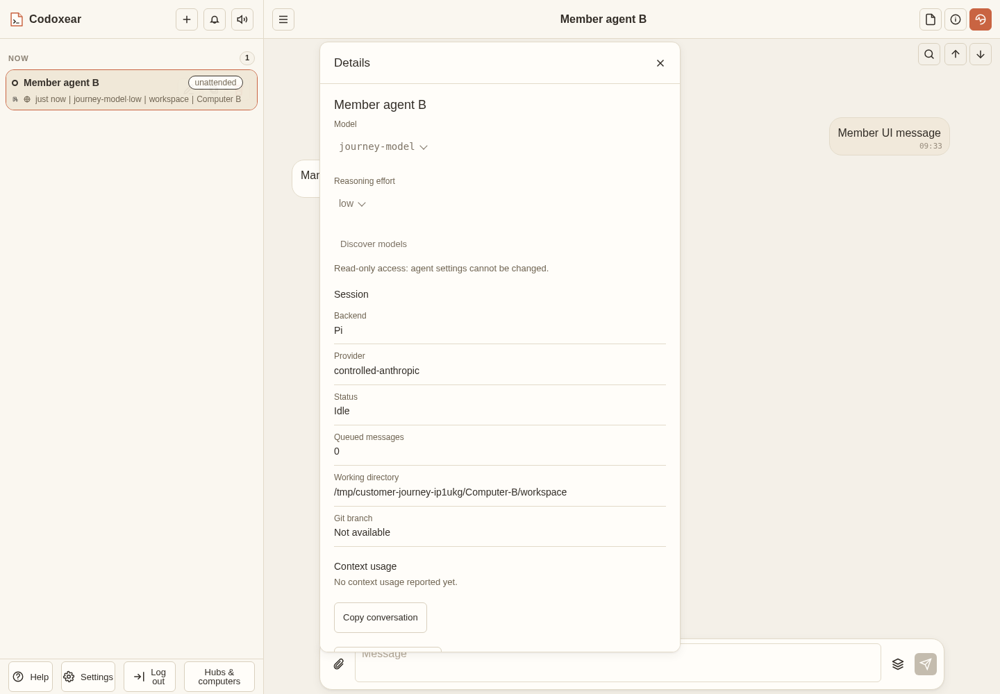
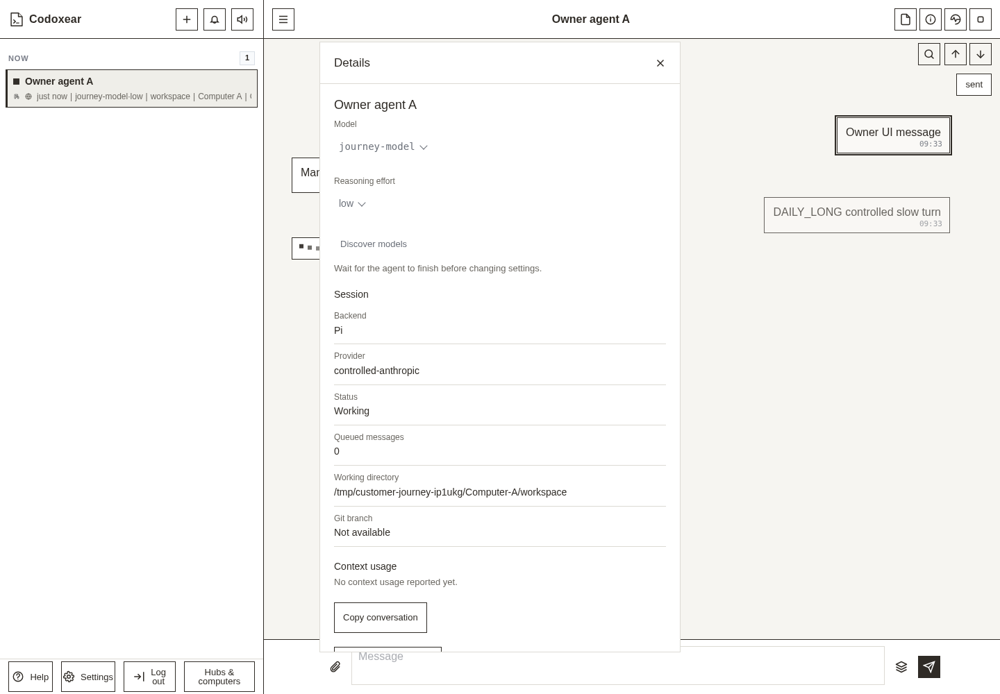
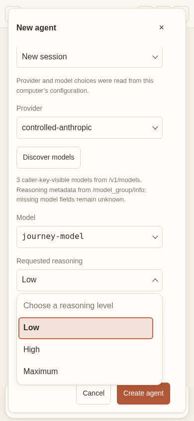
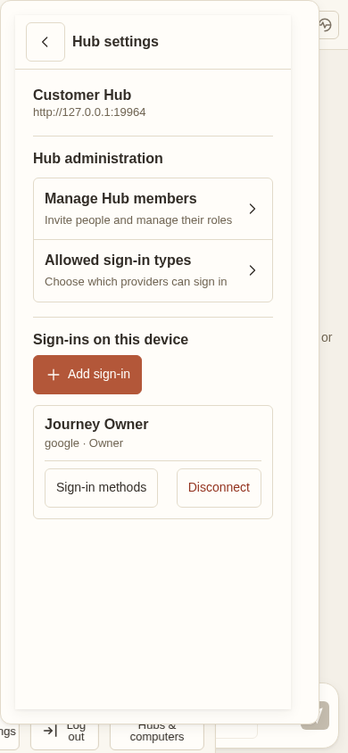
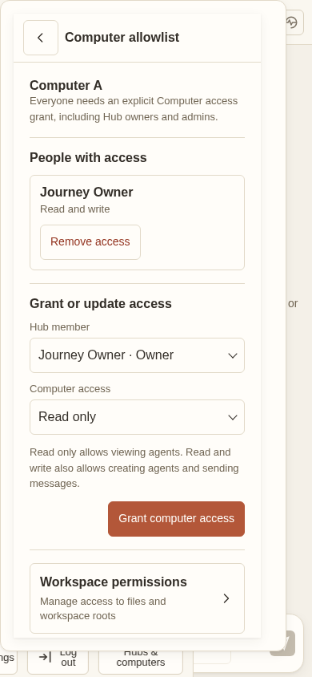

The displayed model and thinking effort are the dropdowns. These frames use the deployed frontend with controlled OAuth/model replies and actual Hub/Computer authorization. They do not establish live provider or physical-device acceptance.










Shared component fixture · Exact source and verification boundaries · Demo